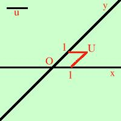

|
E' uguale al sistema di coordinate ortogonali  con la differenza che le due rette non sono perpendicolari; viene usato piuttosto raramente nelle scuole superiori e ho visto usarlo solo in abbinamento a Fisica. All'universita' viene usato per Meccanica Razionale, nello studio di Spazi Vettoriali e delle Superfici |